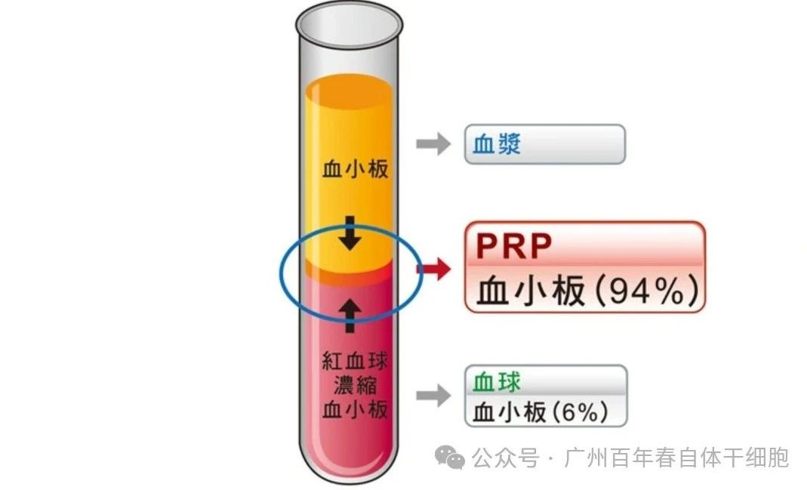
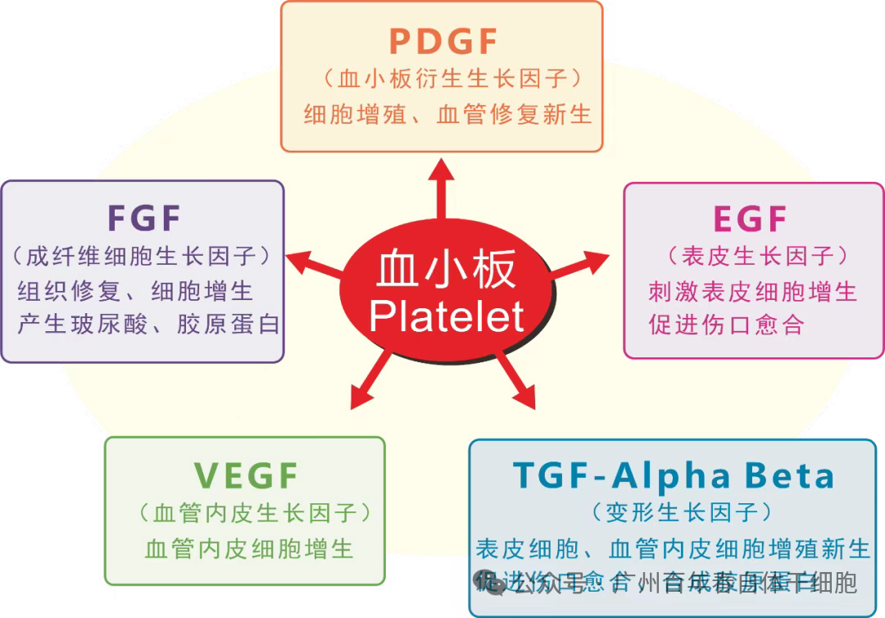
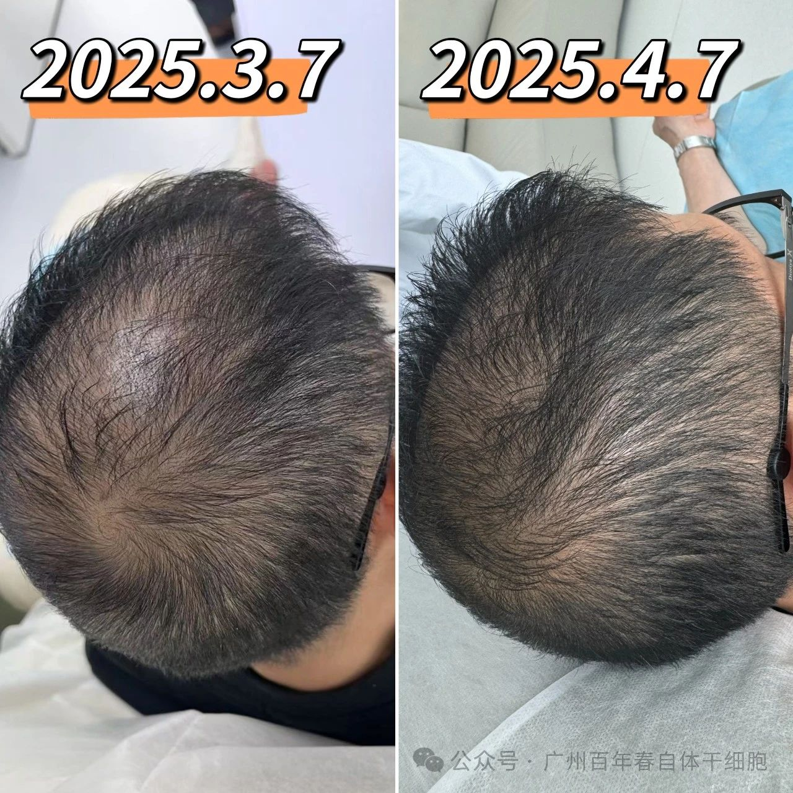
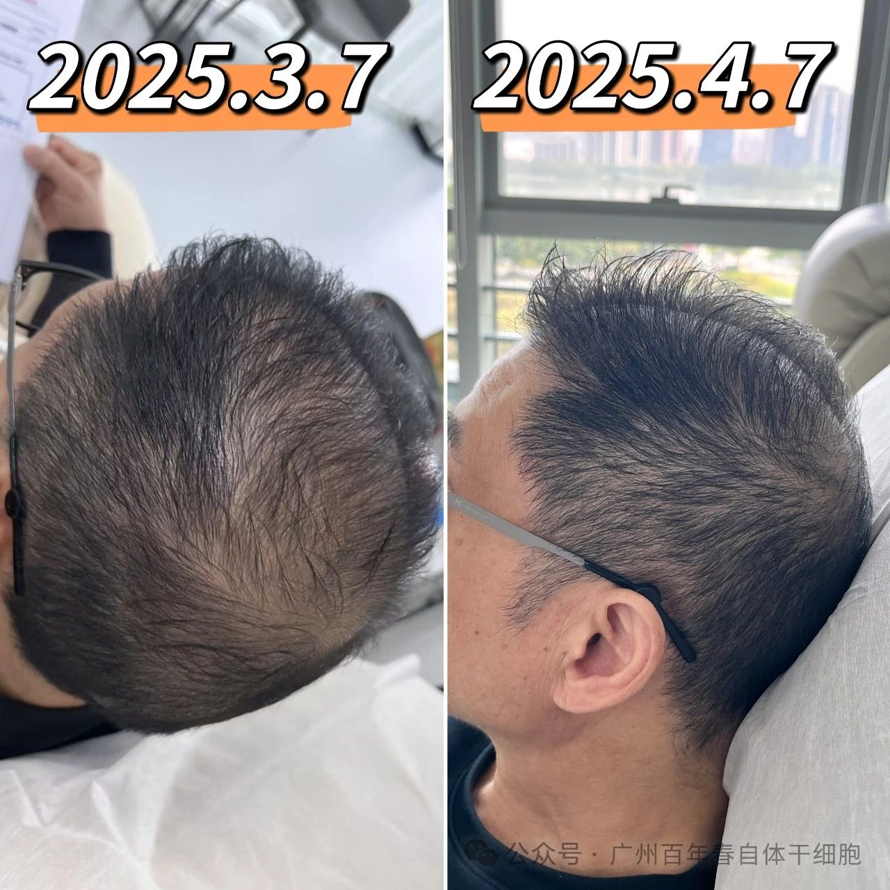
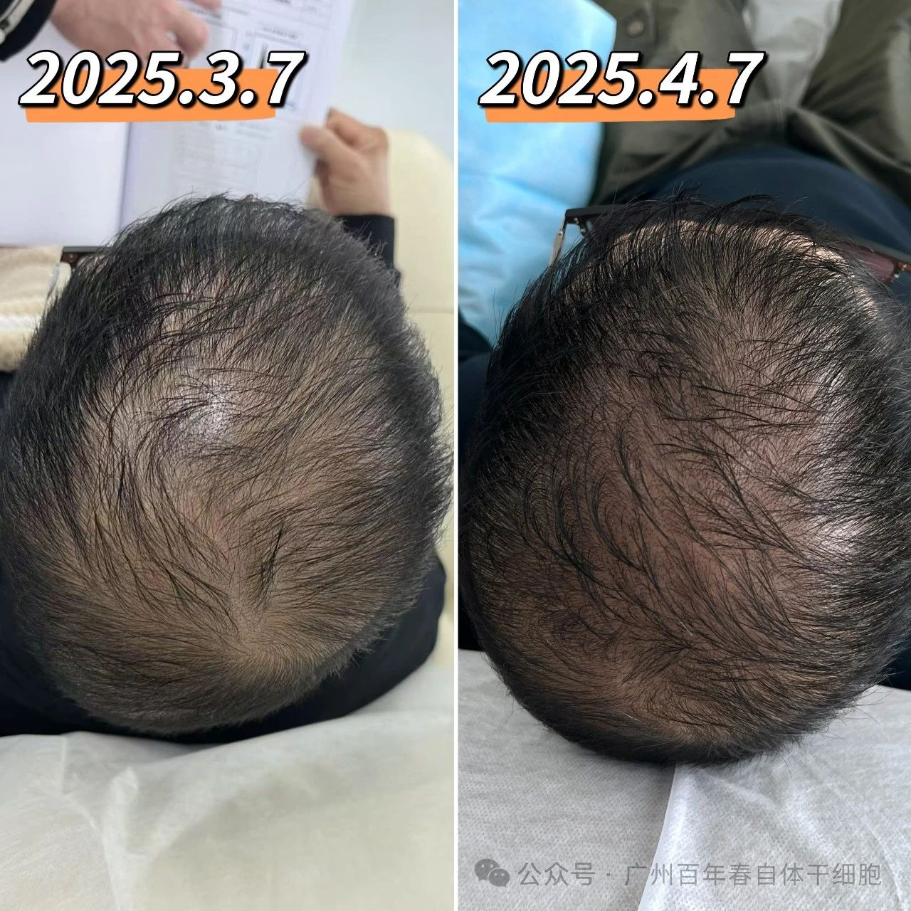

别等身体亮红灯！百年春自体干细胞，为您定制细胞级抗衰防线
2026-03-04

About Us
关于百年春
现在脱发，已经不再是老年人的“专利”了，很多年轻人生活作息不规律，讲究时髦，经常染烫头发，工作压力大等使中枢神经系统长期处于紧张状态，头皮局部的血管收缩使血供减少，造成毛囊营养不良，严重的会导致脱发现象的出现。多方求医又一直未果，现在不用担心了，PRP是目前最新的治疗选择。
用自己的血治疗脱发？瘢痕？美容抗衰？
没错！这个神奇的富血小板血浆（PRP）治疗法
源于1993年，现已经是一个发展成熟的技术
它能让自己的血变成“浓缩的营养”
效果好、安全性高、副作用小！
PRP生发小能手、拯救各种脱发问题
富血小板血浆（PRP）含有丰富的生物活性因子，主要是通过注射的方式来达到头皮的真皮层，可明显增加头皮细胞活性，使头皮新陈代谢速度加快，促进头发再生、减少脱发、增加毛发密度。PRP注射剂是由患者的血液制备而成的，浓度相当于全血血小板浓度的4～6倍。PRP治疗过程只需要40-60mim。PRP的治疗次数为1次/月，连续注射多为3-6次可见一定的治疗效果。


客户仅做一次自体PRP生发效果前后对比：



经过一个月的自体PRP生发疗程，客户的头发状态获得显著改善：发量肉眼可见变得浓密丰盈，新生细软的绒毛均匀分布于发际线及头顶区域，整体发丝呈现出健康生长的活力状态。日常梳洗中的掉发量明显减少，头皮环境得到优化。
●雄激素性脱发：这是最常见的脱发类型，主要与雄激素水平过高有关，表现为头顶头发逐渐稀疏、发际线后移。
●斑秃：一种自身免疫性疾病，表现为突然出现的圆形或椭圆形脱发斑，局部头皮光滑，无炎症。
●休止期脱发：由于各种原因（如分娩、手术、严重感染、精神压力过大等）导致毛囊提前进入休止期，从而引起脱发，一般经过一段时间的调理后，头发可以自行恢复生长，但 PRP 治疗可以加速恢复过程。
●毛发移植：毛发移植前将毛发移植体保存在PRP制剂中，毛发移植体最终会有更高的毛发密度和毛发直径，增加毛发移植的成功率。
●安全性高：PRP来源于自身血液，不会引起免疫排斥反应，也不会传播疾病，安全性有保障。
●微创无痛：注射过程创伤小，恢复快，一般不会留下明显的疤痕，也不会影响日常生活和工作。
●效果显著：大量临床研究表明，PRP治疗脱发具有一定的效果，可以增加头发的密度和直径，改善脱发症状。
●联合治疗效果更佳：PRP可以与其他脱发治疗方法（如药物治疗、植发手术等）联合使用，起到协同作用，提高治疗效果。
1.注射前饮食方面不能空腹，但要清淡，少吃油腻，避免辛辣刺激类食物。否则有可能会影响伤口的恢复。
2.在恢复期间不挑食，多吃有利于增长毛发的食材，如黄豆、黑豆、蛋类、禽类、带鱼、虾、熟花生、菠菜等。
3.治疗前后一周内不要服用阿司匹林类，消炎药物。
4.不可以喝酒，饮酒将导致效果下降甚至加重脱发。
5.头皮注射PRP后24小时内，治疗部位尽量不要沾水。
随着医学技术的不断发展，相信PRP在未来会帮助更多患者，为人类健康带来更多福音。
扫码关注